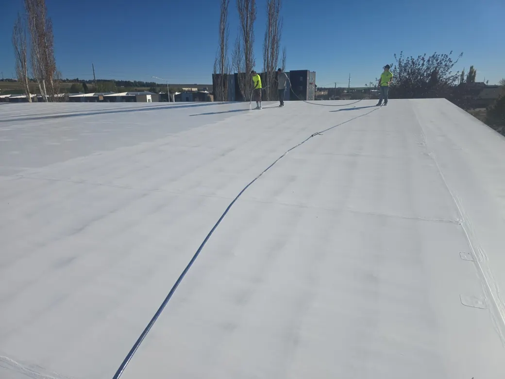

Riverton, Wyoming
Riverton flat roof
The crew’s photos follow one commercial roof from the first wash to the white finish, with a close look at the work around the rooftop unit.
Rexburg, Idaho / October 2026
Two photos from a school roof in Rexburg show how far the crew moved across the roof between morning and afternoon.


Riverton, Wyoming
The crew’s photos follow one commercial roof from the first wash to the white finish, with a close look at the work around the rooftop unit.
Rock Springs, Wyoming
On this clinic roof, the crew reinforced each seam before laying fabric across the full surface.
Tell Wade where the building is and what you’ve noticed.